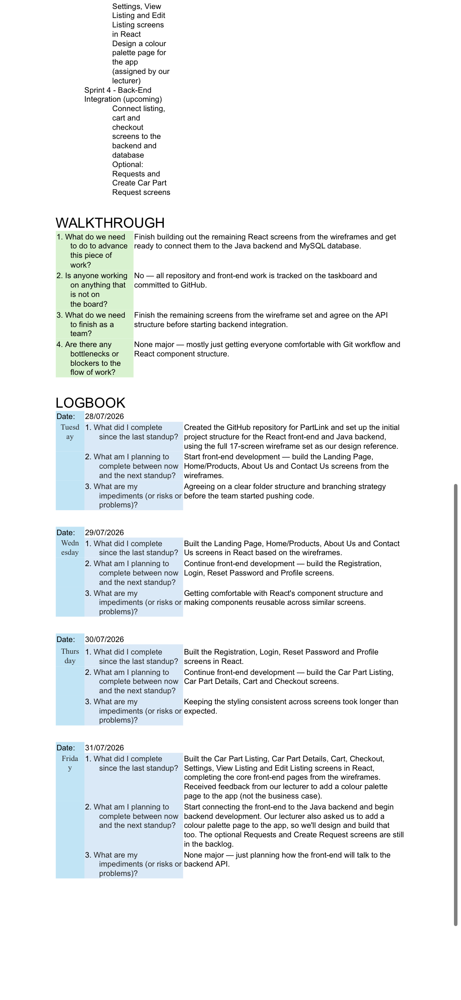
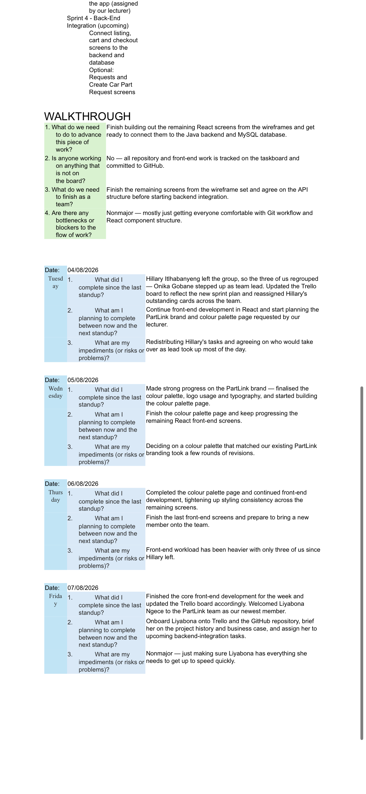

1. Agile Team Charter (20 marks)

Evidence: Sprint1 Team Formation 4/4. Reflection: We defined roles (Onika lead, Sesethu researcher) and handled team changes Hillary leaving, Liyabona joining.
2. User Stories (20 marks)


Buyer story search/filter by brand/model/price, Seller story list with photos. All sprints 4/4.
3. Product & Sprint Backlog (40 marks)


10 sprints completed - Community research Khayelitsha 21 responses, Business Case, 17 screens wireframes, React Java MySQL, GitHub repo.
4. Agile Logbook (20 marks)




Taskboard Product Backlog | In Progress | Completed, Daily standups 14-17 July, 21-24 July, 28-31 July, 4-7 Aug. Bottlenecks: Git workflow, colour palette, team alignment. Advanced.
Blackboard Submission
https://LiyabonaNgece16.github.io - PartLink Portfolio